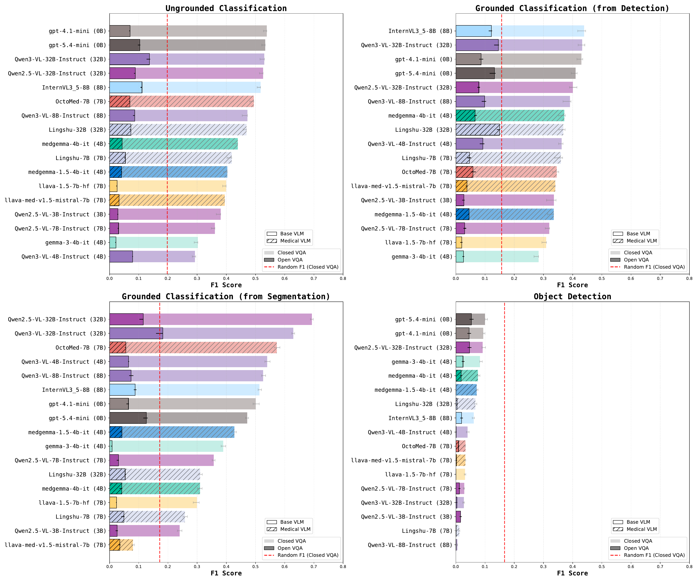
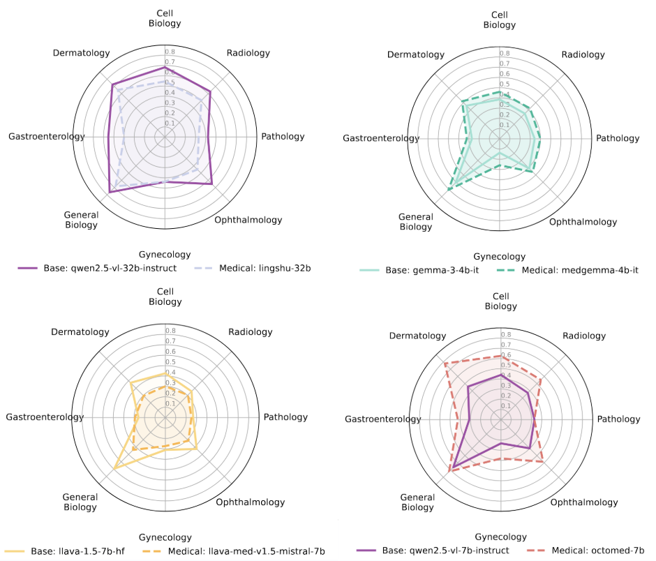
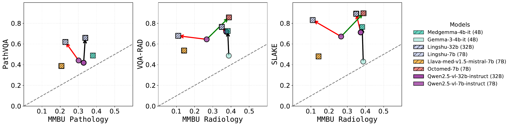

Results

Current Biomedical AI Models Remain Far From Human-Level Performance
We evaluated 17 state-of-the-art vision-language models (VLMs) across diverse biomedical imaging tasks and found that performance remains surprisingly limited. Although some models achieve strong results on individual benchmarks, no model consistently performs well across the full spectrum of biomedical perception tasks (Figure 3).
Models Depend Heavily on Multiple-Choice Cues
Across classification tasks, performance drops dramatically when models must generate answers freely rather than choose from predefined options (Figure 3). This large gap suggests that many current biomedical VLMs rely on answer-choice cues instead of robust visual understanding.
Object Detection Is a Major Weakness
While several models can correctly classify findings when provided with a region of interest, they struggle to accurately localize those findings themselves (Figure 3). Detection performance remains near random across most models, highlighting significant limitations in spatial reasoning and visual grounding.
No Single Model Dominates
Different models excel on different tasks (Figure 3). GPT-based models perform strongly on some classification tasks, InternVL excels on certain grounded reasoning tasks, and Qwen-based models achieve the highest performance on segmentation-derived classification. However, no model consistently ranks first across all evaluation settings.
Medical Adaptation Does Not Necessarily Leads to Performance Gains
Models trained specifically on medical data not always outperfom their general-purpose counterparts (Figure 5A). The models that do (OctoMed and MedGemma), show modest gain. In many cases, medically adapted models perform similarly or worse to their base versions, suggesting that current adaptation strategies only partially address the challenges of biomedical visual understanding.
Larger Medical Training Sets Matter
The success of medical adaptation appears to depend more on the amount of biomedical training data than on model size alone (Figure 5B). Models trained on larger medical datasets tend to show more consistent improvements across tasks.
Success on Existing Benchmarks Does Not Always Generalize
Many specialized medical models achieve strong results on widely used benchmarks such as PathVQA, VQA-RAD, and SLAKE (Figure 6). However, these gains frequently fail to transfer to broader and more diverse biomedical settings, suggesting that current benchmarks may overestimate real-world capability.


